[译] Transformer 是如何工作的：600 行 Python 代码实现 self-attention 和两类 Transformer（2019）
Published at 2023-06-06 | Last Update 2024-04-23
译者序
本文整理和翻译自 2019 年（最后更新 2023 年）的一篇文章： Transformers From Scratch， 由浅入深地解释了 transformer/self-attention 背后的工作原理。
如果对 transformer 的使用场景和所处位置还不清楚，可以先看一下这篇：
理解本文大部分内容只需要基本的高数知识（矩阵乘法）和一点耐心。 原文代码见这里，不过 AI 相关的库更新非常快， 因此现在让跑起来可能有点困难。有兴趣有时间的可以考虑基于较新版本的库重构一下其代码。
水平及维护精力所限，译文不免存在错误或过时之处，如有疑问，请查阅原文。 传播知识，尊重劳动，年满十八周岁，转载请注明出处。
以下是译文。
-
2 self-attention 为什么有效？以电影推荐为例 - 2.1 传统推荐系统：特性向量
plaintext 点积用户偏好 -
4 现代 transformer 对 self-attention 的扩展 - 4.1 引入控制参数（for queries, keys and values） - 4.1.1 每个 input vector 都被使用三次 - 4.1.2 具体例子（译注） - 4.1.3 引入三个 k×k 权重矩阵
-
6 基于 multi-head self-attention 实现 transformers - 6.1 Transformer 定义
-
6.3 文本分类（text classification）transformer - 6.3.1 输出：单个分类结果 - 6.3.2 输入：词序敏感（using the positions） - 位置嵌入（position embeddings） - 位置编码（position encodings）
- [6.3.3 基于 Pytorch 实现](#633-基于-pytorch-实现) -
6.4 文本生成（text generation）transformer - 6.4.1 自回归模型和掩码 - 6.4.2 训练：基于维基百科数据集
plaintext enwik8- 6.4.3 文本生成结果分析
-
8 现代 transformers - 8.1 Google
plaintext BERT：plaintext 340M参数
摘要
Transformer 是一类非常令人着迷的机器学习架构（a family of machine learning architectures）。 之前已经有一些不错的介绍文章（例如 [1, 2]），但过去几年 transformer 变得简单了很多， 因此要解释清楚现代架构（modern architectures）是如何工作的，比以前容易多了。
本文试图丢掉历史包袱，开门见山地解释现代 transformer 的工作原理。
神经网络和反向传播（neural networks and backpropagation）的基本知识有助于更好地理解本文，
另外，理解本文程序需要一点 Pytorch 基础， 但没有基础关系也不大。
1 self-attention（自注意力）模型
self-attention 运算是所有 transformer 架构的基本运算。
1.0 Attention（注意力）：名字由来
从最简形式上来说，神经网络是一系列对输入进行加权计算，得到一个输出的过程。
具体来说，比如给定一个向量 [1,2,3,4,5] 作为输入，权重矩阵可能是 **
[0, 0, 0, 0.5, 0.5]
， 也就是说最终的 output 实际上只与 input 中的最后两个元素有关系 —— 换句话说， 这一层神经网络只关注**最后两个元素（注意力在最后两个元素上）， 其他元素是什么值对结果没有影响 —— 这就是 **
attention
** 这一名字的由来。
注意力模型大大降低了神经网络的计算量：经典神经网络是全连接的，而上面的例子中， 这一层神经网络不需要全连接了，每个输出连接到最后两个输入就行了，也就是从 1x5 维降低到了 1x2 维。
图像处理中的卷积神经网络（CNN）也是类似原理：只用一小块图像计算下一层的输出，而不是用整帧图像。
1.1 输入输出：vector-to-vector 运算
Self-attention 是一个 sequence-to-sequence 运算： 输入一个向量序列（a sequence of vectors），输出另一个向量序列。
我们用 𝐱1,𝐱2,…,𝐱t 表示输入向量，用 𝐲1,𝐲2,…,𝐲t 表示相应的输出向量，这些向量都是 k 维的。 要计算输出向量 𝐲i ，self-attention 只需对所有输入向量做加权平均（weighted average），
𝐲i=∑jwij𝐱j
在传统神经网络中，权重都是（常量）参数， 但这里的权重并不是：wij 是根据 𝐱i 和 𝐱j 计算出来的。 计算它有很多种方式（算法），接下来看一种最简单的。
1.2 权重矩阵计算和归一化
计算权重矩阵的 最简单函数就是点积（dot product）：
w′ij=𝐱iT𝐱j
注意到权重矩阵的计算跟它所在的位置 (i,j) 直接相关，也就是说，每个位置 (i,j) 对应的权重矩阵都不一样。
点积得到的结果取值范围是正负无穷，为了使累加和（表示概率）等于 100%， 需要对它们做归一化：用 pytorch 术语来说就是 **
softmax
**，
wij=exp w′ij∑jexp w′ij
这会将每个权重矩阵归一化到 [0,1]，并且累加和等于 1。
1.3 直观展示与小结
以上就是关于 self-attention 的基本运算。总结起来就是两点：
- vector-to-vector 运算：self-attention 是对 input vector 做矩阵运算，得到一个加权结果作为 output vector；
- 加权矩阵计算：权重矩阵不是常量，而是跟它所在的位置
直接相关，根据对应位置的 input vector 计算。(i,j)
用图来表示如下：
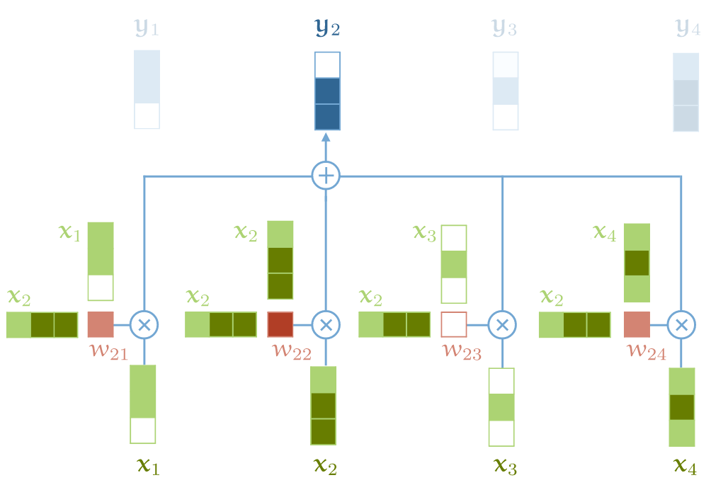
self-attention 基本运算
- output vector 中的每个元素 yj 都是对 input vector 中所有元素的加权和；
- 对于 yj，加权矩阵由 input 元素 xj 与每个 input 元素计算得到；
要构建一个完整的 transformer 还需要一点其他东西，但最核心的运算就是以上这两个了。 更重要的是，
- 这是整个架构中，唯一在 input & output vector 之间 所做的运算；
- Transformer 架构中的其他运算都是单纯对 input vector 做运算。
2 self-attention 为什么有效？以电影推荐为例
上面看到 self-attention 模型非常简单，本质上就一个加权平均公式，那为什么这个加权平均机制的效果这么好呢？ 为了直观解释这个问题，我们看个具体例子 —— 电影推荐 —— 假设你经营着一家电影租赁公司， 想向用户推荐他们可能会喜欢的电影。接下来看看基于传统方式和 transformer 方式分别是怎么做的。
2.1 传统推荐系统：特性向量
点积
用户偏好
步骤很简单：
- 人工设计一些电影特征，比如浪漫指数、动作指数，
- 人工设计一些用户特征，例如他们喜欢浪漫电影或动作片的可能性；
有了这两个维度的数据（特征向量）之后，对二者做点积（dot product）， 得到的就是电影属性与用户喜欢程度之间的匹配程度，用得分表示，
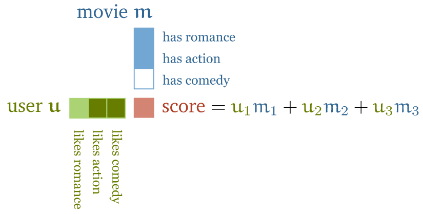
电影推荐：电影特征向量（浪漫、动作、喜剧）与用户特性向量（喜欢浪漫、动作、喜剧的程度）做点积运算
关于计算结果（得分）：
- 如果特征的符号相同，例如“浪漫电影 && 用户喜欢浪漫电影”， 或者“不是浪漫电影 && 用户不喜欢浪漫电影”，得到的点积就是正数；反之就是负数；
- 特征值的大小决定该特征对总分的贡献大小： 一部电影可能有点浪漫，但不是很明显，或者用户可能只是不喜欢浪漫，但也没到讨厌的程度。
这种推荐模型的好处是简单直接，很容易上手；缺点是规模大了很难搞， 因为对几百万部电影打标的成本非常高，精确标记用户喜欢或不喜欢什么也几乎是不可能的。
2.2 基于 self-attention 的推荐系统
接下来看基于 self-attention 的推荐系统是怎么设计的。
2.2.1
电影特征
和
用户特征
作为模型参数，匹配
已知的用户偏好
也是两步：
- 电影特征和用户特征不再直接做点积运算，而是作为模型的参数（parameters of the model）；
- 收集少量的用户偏好作为目标，然后通过优化用户特征和电影特征（模型参数）， 使二者的点积匹配已知的用户喜好。
这就是 self-attention 的基本原理。注意， 尽管我们没有告诉模型某个特征意味着什么（表示什么）， 但实践证明，训练之后的特征确实反映了关于电影内容的合理语义。
用素人术语来重新描述以上过程：我们告诉神经网络，
- 我有一些关于电影和用户的信息，作为输入；有一些用户偏好信息，作为输出。
- 你把这两者串联起来，能够根据输入预测输出，你自己怎么实现我不管，把最终模型（参数）给我就行了。
译注。
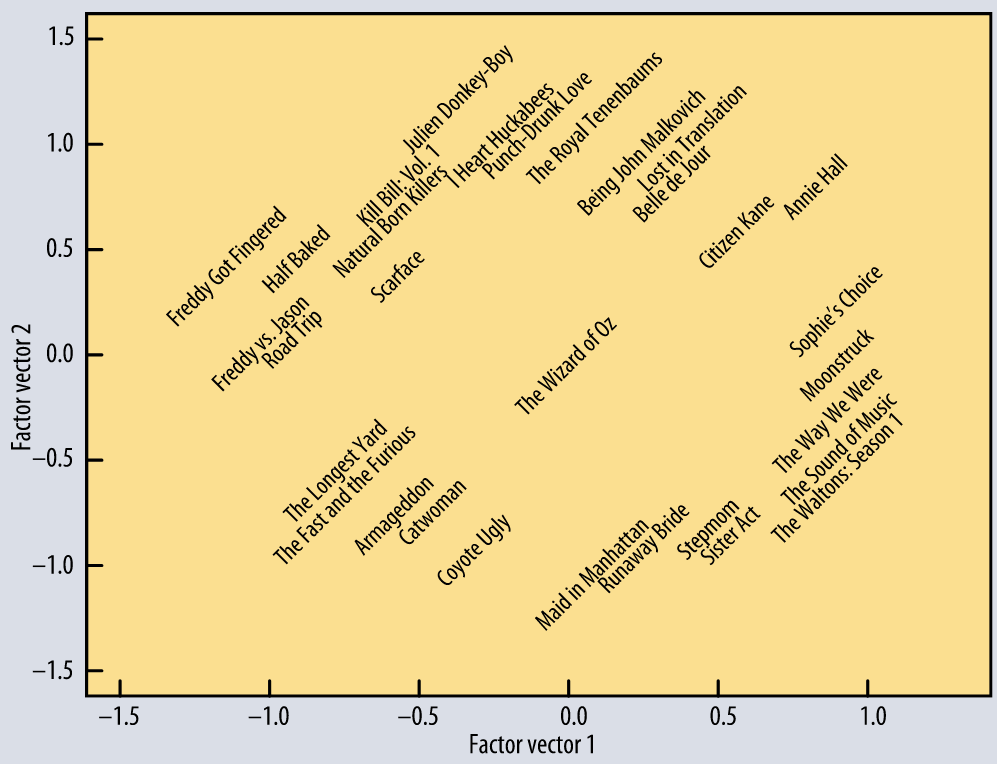
从一个基本的 matrix factorization 模型学习到的前两个特征。 模型只用到了“哪些用户喜欢哪些电影”信息，而没有用到任何电影内容信息。 横轴：从流俗到高雅；纵轴：从小众到主流。信息来自 [4]。
这些已经足够说明 dot product 是如何表示对象和它们的关系的。 更多关于推荐系统的内容，可移步 mlvu.github.io/lecture12。
2.2.2 嵌入层：对输入进行处理
假设我们有一串单词作为输入，原理上只要将其作为 input vector 送到 self-attention 模型。 但实际上我们需要对这个 input vector 做一下预处理（下一节会解释为什么），生成一个中间表示， 这就是序列建模中的嵌入层。 具体来说，会为每个单词 t 分配一个嵌入向量（embedding vector） 𝐯t（我们后面将学习到这个值）。
嵌入层将 input vector：
the,cat,walks,on,the,street
转换为 embedding vector（注意：每个单词的维度从 1x1 变成了 1xN）：
𝐯the,𝐯cat,𝐯walks,𝐯on,𝐯the,𝐯street
将这个 embedding vector 输入 self-attention 层，得到的就是 output vector：
𝐲the,𝐲cat,𝐲walks,𝐲on,𝐲the,𝐲street
其中 𝐲cat 是所有嵌入向量的加权和（weighted sum），由它们与 𝐯cat 的（归一化）点积加权。
2.2.3 直观解释
由于我们正在学习（learning） 𝐯t 的值是什么，两个词的“相关”程度完全由任务决定。
- 在大多数情况下，定冠词 "the" 与句子中其他单词表示什么意思（the interpretation of the other words）关系不大； 因此我们最终得到的嵌入层 𝐯the 与所有其他单词的点积可能很小或为负数；
- 另一方面，要解释这句话中 “walks” 的意思，弄清楚谁在走路是非常有用的。这很可能由名词表达， 因此对于像 cat 这样的名词和像 walks 这样的动词，我们可能最终学习到的 𝐯cat and 𝐯walks 点积是个较大的正数。
这就是 self-attention 背后的基本直觉：
- 点积表示输入序列中两个向量的相关程度，“相关”由学习任务（learning task）定义，
- 输出向量是整个输入序列的加权和，权重由这些点积决定。
2.2.4 self-attention 特殊属性
在继续之前，有些特殊属性需要提及一下，因为不同于在一般的 sequence-to-sequence 运算：
-
到目前为止，我们的 self-attention 模型还没有参数（ 虽然下文中，我们还是会为 self-attention 添加几个参数）。
换句话说，基本的 self-attention 实际上做什么完全取决于生成输入序列的上游机制。 例如嵌入层这种机制会驱动着 self-attention 学习基于点积的表示。
-
self-attention 将输入当做一个集合（set）而不是序列（sequence）。
如果我们对输入序列进行重排（permute），输出序列除了也跟着重排，其他方面将完全相同， 也就是说 self-attention 是排列等变的（permutation equivariant）。 后面会看到，构建完整的 transformer 时，我们还是会引入一些东西来保持输入的顺序信息， 但要明白 self-attention 本身是不关心输入的顺序属性的（sequential nature）。
3. 实现一个基本的 self-attention
What I cannot create, I do not understand. —— Feynman.
纸上得来终觉浅，绝知此事要躬行 —— 陆游《冬夜读书示子聿》
接下来我们基于 pytorch 实现前面介绍的最基础 self-attention 模型。
3.1 输入的表示：tensor（多维矩阵）
我们面临的第一个问题是如何用矩阵乘法表示 self-attention： 按照定义，直接遍历所有 input vectors 来计算 weight 和 output 就行， 但显然这种方式效率太低；改进的方式就是用 pytorch 的 tensor 来表示， 这是一个多维矩阵数据结构：
A **
torch.Tensor** is a multi-dimensional matrix containing elements of a single data type.
- 输入 𝐗 由 t 个 k-维 vector 组成的序列，
- 引入一个 **
** dimension b，mini-batch
就得到了一个三维矩阵 (b,t,k)，这就是一个 tensor。
3.2 计算权重矩阵：输入矩阵 * 转置矩阵
接下来计算加权矩阵，它表示的是 input vector 之间的相关性， 因此用输入矩阵 𝐗 乘以它的转置矩阵（transpose），用 pytorch 库来计算非常方便。
import torch
import torch.nn.functional as F
# 假设我们有一些 tensor x 作为输入，它是 (b, t, k) 维矩阵
x = ...
# torch.bmm() 是批量矩阵乘法（batched matrix multiplication）函数，对一批矩阵执行乘法操作
raw_weights = torch.bmm(x, x.transpose(1, 2))
然后对权重矩阵进行正值化和归一化，以使得一个 row 内所有权重加起来为 1，
weights = F.softmax(raw_weights, dim=2)
3.3 计算输出
有了权重矩阵，计算输出就非常简单了：只需要将输入 𝐗 和权重矩阵相乘即可，一行代码搞定：
y = torch.bmm(weights, x)
输出矩阵 𝐘 就是 size
(b, t, k)
的 tensor，每一行都是对 𝐗 的行的加权。
这就是 最基础的 self-attention 模型的实现： 两次矩阵乘法和一次归一化（softmax）。
4 现代 transformer 对 self-attention 的扩展
现代 transformer 中实际使用的 self-attention 依赖于三个额外技巧。
4.1 引入控制参数（for queries, keys and values）
4.1.1 每个 input vector 都被使用三次
上一节已经看到，每个 input vector 𝐱i 在 self-attention 计算中会被使用三次， 根据角色的不同这三次分别称为 queries、keys、values（查询、键和值，后面再解释这些名称的来源），
- **
5.：与其他所有 input vector 联合计算 **query
9. 位置的 output vector 𝐲i 所需的权重；i - **
14.：与 query 类似，与其他所有 input vector 联合计算 **key
18. 位置的 output vector 𝐲j 所需的权重，这里 j≠i；j - **
23.*：在计算每个 output vector 时，作为输入值参与加权求和。value
也就是说在我们目前的基本 self-attention 中，每个 input vector 必须承担所有三个角色。
4.1.2 具体例子（译注）
上面的描述比较抽象，这里参考下图更直观解释一下。这个图对应 i=2，因此 𝐱2 会用到三次（更准确地说是三种用途）：
图：self-attention 基本运算
- **
5.*：𝐱2 与 𝐱2 联合计算 𝐰22；query - **
10.*：𝐱2 与 𝐱j 联合计算 𝐰2j 权重，这里 j≠2；key - **
15.*：𝐱2 作为输入值参与加权求和。value
4.1.3 引入三个 k×k 权重矩阵
对原始 input vector 应用线性变换，我们就能够为每个角色衍生（derive）出一个新向量，从而简化 self-attention。 具体来说，引入三个 k×k 权重矩阵 𝐖q, 𝐖k, 𝐖v（来自 query/key/value 首字母） 对每个输入 xi 计算三个线性变换，
𝐪i=𝐖q𝐱i𝐤i=𝐖k𝐱i𝐯i=𝐖v𝐱i
那么 (i,j) 位置处的权重矩阵就可以表示为：
w′ij=𝐪iT𝐤j
做归一化处理，
wij=softmax(w′ij)
最后，output vector 中位置 j 处的值为：
𝐲i=∑jwij𝐯j
这就给 self-attention layer 引入了几个可控制的参数（controllable parameters, 𝐖q, 𝐖k, 𝐖v）， 对同一份输入应用不同的线性变换，就可以得到不同角色所需的值，如下图所示，
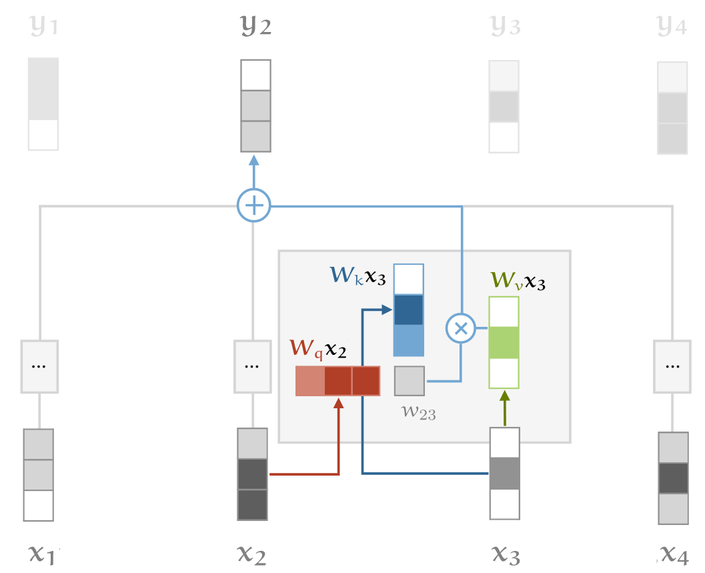
self-attention key/query/value transformation 的直观解释
4.2 对点积做缩放处理（scaling the dot product）
softmax 函数对非常大的输入值敏感。这些 input 会梯度消失，学习变慢甚至完全停止。 由于点积的平均值随着嵌入维度 k 的增加而增大，因此点积送到 softmax 之前进行缩放有助于缓解这个问题。
原来执行 softmax 之前的权重矩阵：
w′ij=𝐪iT𝐤j
现在：
w′ij=𝐪iT𝐤jk−−√
Why k−−√? Imagine a vector in ℝk with values all c. Its Euclidean length is k−−√c. Therefore, we are dividing out the amount by which the increase in dimension increases the length of the average vectors
4.3 引入 multi-head attention
最后，需要考虑到，同一个单词随着相邻单词们的不同表示的意思也可能不同。例如下面这个句子：
mary,gave,roses,to,susan
我们看到 “gave” 这个词与句子的不同部分有不同的关系：
- “mary” 表示谁在 “gave”，
- “roses” 表示 “gave” 的是什么，
- “susan” 表示接受者是谁。
4.3.1 需求：输出中嵌入更多信息
在我们的基本 self-attention 中，所有这些信息是混合在一起的： 输入 𝐱mary 和 𝐱susan 可以不同程度地影响输出 𝐲gave ，这取决于它们与 𝐱gave 的点积。
但是，如果我们想以其他方式影响输出，这种模型就不行了。 例如，如果 “roses” 的给予方和接受方信息都出现在 𝐲gave ，但位于不同部分。 也就是说，基本的 self-attention 欠缺了很多灵活性。
This leaves aside how we figure out who gave the roses. We can do that based on prior knowledge about Mary and Susan, encoded in the embeddings. We can also look at the order of the words, but we’ll look at how to achieve that later.
4.3.2 解决方式：引入多个 self-attention（multi-head）
要实现这个目的，就需要让我们的模型有更强的辨识力，一种做法就是 组合多个 self-attention（用 r 索引）， 每个对应不同的 query/key/value 参数矩阵 𝐖rq, 𝐖rk,𝐖rv， 这些就称为 attention heads（注意力头）。
对于 input 𝐱i，每个 attention head 产生不同的 output vector 𝐲ri（一部分输出）。 最后再将这些部分输出连接起来，通过线性变换来降维回 k。
4.3.3 提升 multi-head self-attention 效率：query/key/value 降维
理解 multi-head self-attention 最简单的方法是把它看作多个并行的 self-attention 机制， 每个都有自己的键、值和查询转换。
Multi-head self-attention 的缺点是慢，对于 R 头，慢 R 倍。 不过有办法优化：我们可以实现这样的 multi-head self-attention，它既能利用多个 self-attention 提升辨识力， 又与 single-head self-attention 基本一样快。要实现这个目的，每个 head 需要对 query/key/value 降维。 如果输入向量有 k=256 维，我们的模型有 h=4 个 attention head，则降维操作包括：
- 将输入向量乘以一个 **
** 矩阵，这会将 input vector 从 256 维降到 64 维；256×64 - 对于每个 head 需要执行 3 次降维：分别针对 query/key/value 的计算。
我们甚至只用三次 **
k×k
** 矩阵乘法就能实现 multi-head 功能， 唯一需要的额外操作是将生成的 output vector 重新按块排序：
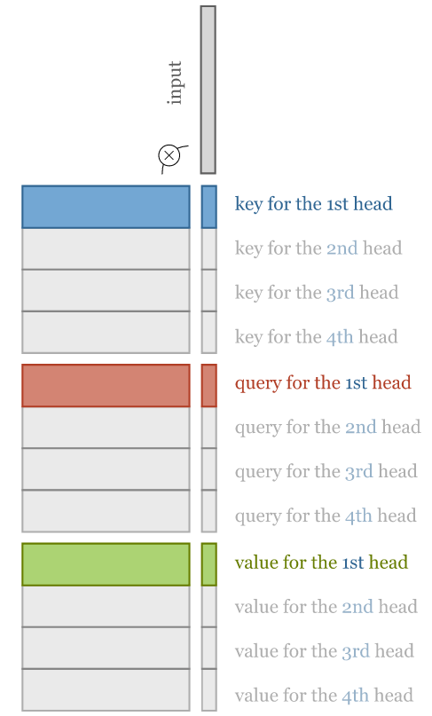
To compute multi-head attention efficiently, we combine the computation of the projections down to a lower dimensional representation and the computations of the keys, queries and values into three k×k matrices.
4.3.4 完整工作流
下图展示了的整个 multi-head self-attention 过程：
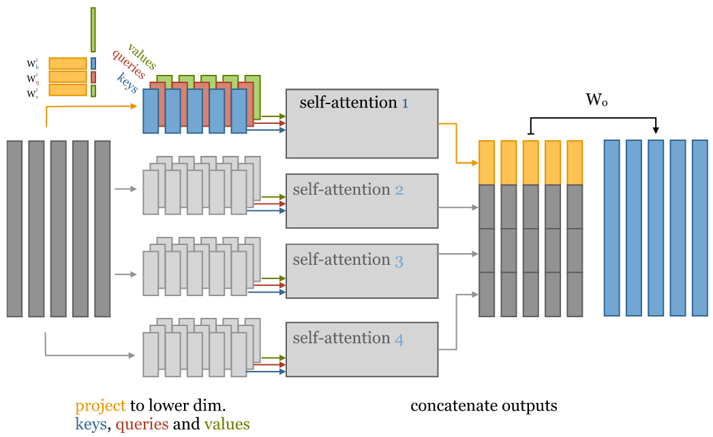
4-head self-attention 的直观解释。对输入进行降维，针对 key/value/query 分别进行矩阵运算来实现。
从左到右分为 5 列：
-
原始 256-维 input vector；
-
输入降维：将 input vector 乘以 256x64 矩阵，降维到 64 维；
注意：对每个 input vector 需要分别针对 query/key/value 降维，总共是 3 遍；
-
将降维后的 input 分别输入多个并行的 self-attention；
-
计算得到多个降维之后的 output vector；
-
对低维度 output vectors 进行拼接，重新回到与 input vectors 一样的维度。
4.5 multi-head vs. single-head 模型参数数量对比
参数指的是在将 input vector 变成 output vector 过程中用到的那些系数（权重矩阵）。
我们假设输入的是 k-维 input vectors，接下来分别看下 multi-head 和 single-head 的参数数量。
4.5.1 single-head
- 权重矩阵 wij，其中 i,j∈[0,k]；
- 3 个平面：query/key/value；
因此总参数数量是 3k2。
4.5.2 multi-head
假设有 4 个 head，即 h=4，
- 每个 head 对应一个 self-attention，每个 self-attention 3 个平面（query/key/value），因此总共 **
** 个平面；3h - 每个平面的权重矩阵 wij，其中 i∈[0,k],j∈[0,k/h]；
因此总的参数个数：3hkkh=3k2，与 single-head self-attention 的参数数量相同。
4-head self-attention 的直观解释。对输入进行降维，针对 key/value/query 分别进行矩阵运算来实现。
唯一的区别是 multi-head self-attention 最后拼接 output vector 时多了一个矩阵 Wo。与 single-head 相比，这增加了 k2 个参数。 在大多数 Transformer 中，每次 self-attention 之后会紧跟着一个前馈层（feed-forward layer），因此这可能不是绝对必要的。 但我还未见过能否把 Wo 去掉的严肃讨论。
5 self-attention 主要代码实现
接下来将我们的 self-attention 实现为一个 python 模块，方便复用：
import torch
from torch import nn
import torch.nn.functional as F
class SelfAttention(nn.Module):
def __init__(self, k, heads=4, mask=False):
super().__init__()
assert k % heads == 0 # input vector size 必须是 heads 的整数倍
self.k, self.heads = k, heads
然后，初始化几个
k*k
的线性变换矩阵，
nn.Linear(bias=False)
能实现这个效果，并做了适当的初始化：
# Compute the queries, keys and values for all heads
self.tokeys = nn.Linear(k, k, bias=False)
self.toqueries = nn.Linear(k, k, bias=False)
self.tovalues = nn.Linear(k, k, bias=False)
# This will be applied after the multi-head self-attention operation.
self.unifyheads = nn.Linear(k, k)
接下来就可以实现了 self-attention 的计算了，在模型中对应的是 **
forward()
** 函数。
def forward(self, x):
b, t, k = x.size()
h = self.heads
# 首先，为所有 heads 计算 query/key/value，得到的是完整嵌入维度的 k*k 矩阵
queries = self.toqueries(x)
keys = self.tokeys(x)
values = self.tovalues(x)
# 接下来将 queries/keys/values 切块（降维），分别送到不同的 head
s = k // h
keys = keys.view(b, t, h, s)
queries = queries.view(b, t, h, s)
values = values.view(b, t, h, s)
这对 tensors 进行了简单 reshape，现在 tensors 增加了一个 head 维度。 对于每个 input vector，可以理解为将这个 **
k*1
** 矩阵变成了一个 **
h * k//h
** 矩阵，
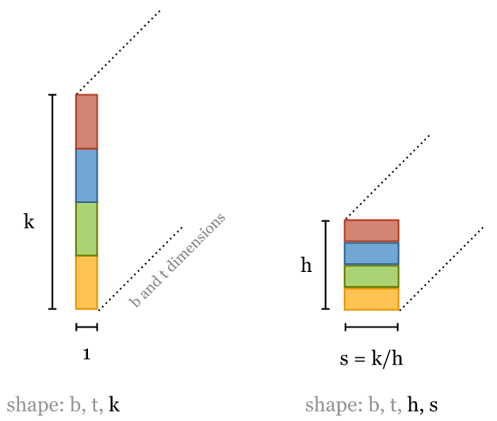
接下来计算点积。每个 head 的点积运算都是一样的，因为我们将 heads fold 到 batch dimention。 这样我们就可以使用
torch.bmm()
（batch matrix multiplification），而 keys, queries and values 可以看做是 batch，只是 batch size 稍大了一点。
由于 head 和 batch dimension 没有相邻，因此我们在 reshape 之前需要转置。 这个操作开销很大，但似乎无法避免：
# - fold heads into the batch dimension
keys = keys.transpose(1, 2).contiguous().view(b * h, t, s)
queries = queries.transpose(1, 2).contiguous().view(b * h, t, s)
values = values.transpose(1, 2).contiguous().view(b * h, t, s)
You can avoid these calls to
contiguous()by using
reshape()instead of
view()but I prefer to make it explicit when we are copying a tensor, and when we are just viewing it. See this notebook for an explanation of the difference.
跟之前一样，点积可以用单个矩阵乘法实现，但现在是 queries 乘以 keys，
# Get dot product of queries and keys, and scale
dot = torch.bmm(queries, keys.transpose(1, 2)) # -- dot has size (b*h, t, t) containing raw weights
dot = dot / (k ** (1/2)) # scale the dot product
dot = F.softmax(dot, dim=2) # normalize, dot now contains row-wise normalized weights
然后用得到的权重再和 values 做点积，得到的就是每个 attention head 的输出：
out = torch.bmm(dot, values).view(b, h, t, s) # apply the self attention to the values
为了将每个 head 的输出重新串联起来得到 k-维的最终输出，我们需要再次转置，然后将转置后的矩阵送到
unifyheads
layer 做最好的维度变换：
# swap h, t back, unify heads
out = out.transpose(1, 2).contiguous().view(b, t, s * h)
return self.unifyheads(out)
至此，一个 multi-head, scaled dot-product self attention 模型就实现好了。
The implementation can be made more concise using einsum notation (see an example here).
6 基于 multi-head self-attention 实现 transformers
6.1 Transformer 定义
transformer 不仅仅是一个 self-attention layer，还是一种架构（architecture）。 如何精确地判断一个东西是或者不是 transformer 还不是很明确，本文采用如下的定义：
任何设计用来处理一组连接的单元（例如序列中的 token 或图像中的像素）， 如果单元之间的唯一交互方式是 self-attention，那这样的架构就称为 transformer。
与**其他机制（如卷积）**一样，可以基于 self-attention 层构建成更大的网络。但在此之前， 我们需要将 self-attention 重构为一个可以复用的 block。
6.2 Transformer block
构建基本的 transformer 有几种略微不同的方式，但大多数结构都大致如下：
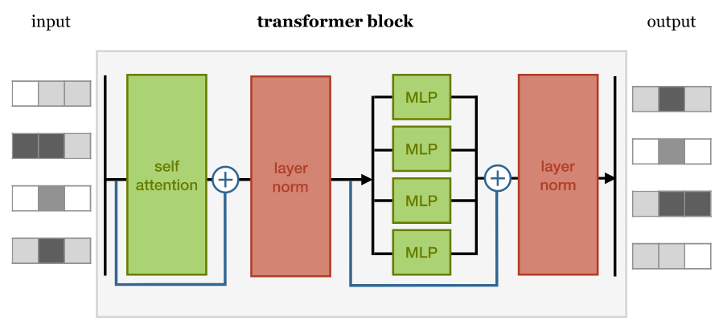
各块依次执行：
- self-attention 层；
- 归一化层；
- 前馈层（feed forward layer），每个 MLP（multi-layer perceptron）分别与每个 input 做运算；
- 另一个层归一化。
两次归一化之前都会添加残差连接（residual connections）。
各组件的顺序并不是只能这样，重要的是
- 将 self-attention 与局部前馈相结合（combine self-attention with a local feedforward），
- 添加归一化和残差连接。
归一化和残差连接是常规技巧，用于使深度神经网络的训练更快、更准确。 层归一化仅应用于嵌入维度（layer normalization is applied over the embedding dimension only）。
实现：
class TransformerBlock(nn.Module):
def __init__(self, k, heads):
super().__init__()
self.attention = SelfAttention(k, heads=heads)
self.norm1 = nn.LayerNorm(k)
self.norm2 = nn.LayerNorm(k)
self.ff = nn.Sequential(
nn.Linear(k, 4 * k),
nn.ReLU(),
nn.Linear(4 * k, k))
def forward(self, x):
attended = self.attention(x)
x = self.norm1(attended + x)
fedforward = self.ff(x)
return self.norm2(fedforward + x)
这里我们选择了让 feed forward 隐藏层比 input/output 大 4 倍，这个倍数的选择是随意的， 更小的倍数可能也能工作，并且占用内存更少，但最小不能小于 input/output layer 大小。
6.3 文本分类（text classification）transformer
我们能构建的最简单 transformer 叫 sequence classifier（顺序分类器）。 我们用 IMDb（Internet Movie Database）sentiment classification 数据集：
- 数据内容是影评，
- token 化成了单词序列，
- 分类标签是
和positive
（对电影的正面/负面评价）negative
架构的核心部分非常简单，就是一长串 transformer block。所需做的事情：
- 如何将 input sequence feed 给这个长链，
- 如何对最终 output sequence 进行变换，得到单个分类结果。
6.3.1 输出：单个分类结果
从 sequence-to-sequence layers 构建 sequence classifier 的最常见方法是 对最终输出序列做 global average pooling，并将结果映射到 softmaxed class vector。
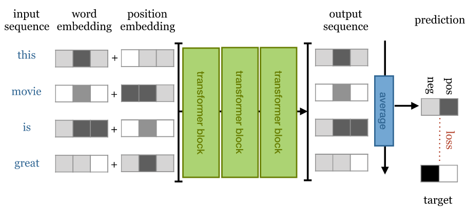
Overview of a simple sequence classification transformer. The output sequence is averaged to produce a single vector representing the whole sequence. This vector is projected down to a vector with one element per class and softmaxed to produce probabilities.
6.3.2 输入：词序敏感（using the positions）
前面已经讨论了嵌入层的原理，接下来我们将用它来表示单词。
正如前面已经提到的，我们正在堆叠（stacking）排列等变层（permutation equivariant layers）， 最终的 global average pooling 是排列不变的（permutation _in_variant）， 因此整个网络也是排列不变的。用白话来说， 即使我们打乱句子中的单词顺序，无论我们学到什么权重，都会得到完全相同的分类结果。 显然，我们希望这个先进的语言模型至少对词序具有一定的敏感性，因此我们需要解决这个问题。
解决方案很简单：创建一个与 input 等长的向量记录当前句子中单词的位置，并将其添加到 word embedding 中。 具体到实现上，有两种选择。
位置嵌入（position embeddings）
像嵌入文字一样嵌入位置。就像创建嵌入向量𝐯cat 和 𝐯susan 一样， 我们创建嵌入向量𝐯12 和 𝐯25。
缺点是在训练期间必须看到每个不同长度的序列，否则相关的位置嵌入得不到训练。 优点是效果还不错，而且很容易实现。
位置编码（position encodings）
位置编码与位置嵌入的工作方式类似，但不学习位置向量，而只是选择一些函数
f:ℕ→ℝk
将位置映射到实值向量，并让网络弄清楚如何解释这些编码。
好处是，对于精心选择的函数，网络能够处理比训练期间看到的序列更长的序列（在它们上表现应该不会太好，但至少我们可以 check）。 缺点是编码函数的选择是一个复杂的超参数（a complicated hyperparameter），实现起来有点复杂。
6.3.3 基于 Pytorch 实现
简单起见，本文使用位置嵌入（position embeddings）来记录 input 顺序。
以下就是我们的 text classification transformer 的完整实现：
class Transformer(nn.Module):
def __init__(self, k, heads, depth, seq_length, num_tokens, num_classes):
super().__init__()
self.num_tokens = num_tokens
self.token_emb = nn.Embedding(num_tokens, k)
self.pos_emb = nn.Embedding(seq_length, k)
# The sequence of transformer blocks that does all the heavy lifting
tblocks = []
for i in range(depth):
tblocks.append(TransformerBlock(k=k, heads=heads))
self.tblocks = nn.Sequential(*tblocks)
# Maps the final output sequence to class logits
self.toprobs = nn.Linear(k, num_classes)
def forward(self, x):
"""
:param x: A (b, t) tensor of integer values representing words (in some predetermined vocabulary).
:return: A (b, c) tensor of log-probabilities over the classes (where c is the nr. of classes).
"""
# generate token embeddings
tokens = self.token_emb(x)
b, t, k = tokens.size()
# generate position embeddings
positions = torch.arange(t)
positions = self.pos_emb(positions)[None, :, :].expand(b, t, k)
x = tokens + positions # 为什么文本嵌入和位置嵌入相加，没有理论，可能就是实验下来效果不错。
# https://writings.stephenwolfram.com/2023/02/what-is-chatgpt-doing-and-why-does-it-work/
x = self.tblocks(x)
# Average-pool over the t dimension and project to class
# probabilities
x = self.toprobs(x.mean(dim=1))
return F.log_softmax(x, dim=1)
在深度为 6 ，最大序列长度为 512 时，这个 transformer 取得了 85% 的准确度，与 RNN（循环神经网络）模型的结果相当，但训练速度快得多。 要看到这个 transformer 真正接近人类的性能，就需要在更多数据上训练更深的模型。后文将详细介绍怎么做。
6.4 文本生成（text generation）transformer
接下来尝试一下自回归模型（autoregressive model）： 训练一个字符级别（character level）的 transformer 来预测序列中的下一个字符。
6.4.1 自回归模型和掩码
训练方式很简单（并且在 transformer 出现之前就已经存在很久了）。 我们给 sequence-to-sequence 模型一个序列作为输入，然后要求它预测序列中下一个位置的字符。 换句话说，目标输出是向左移动一个字符的相同序列：
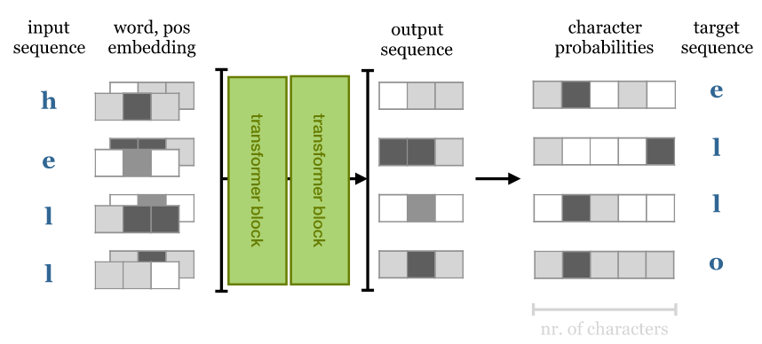
- 如果是 **
** 模型，那这就是我们所需做的所有事情， 因为它不能往前看，output i 只依赖 inputs 0 ~ i。RNN - 而对于 **
，output 取决于整个 input sequence**， 因此预测下一个单词就简单多了，只需从 input 中挑选。transformer
要将 self-attention 用作自回归模型，需要确保它不能 look forward input 序列。 在 softmax 之前对点积矩阵应用一个掩码，禁用矩阵对角线之上的所有元素， 就能帮我们实现这一目的。
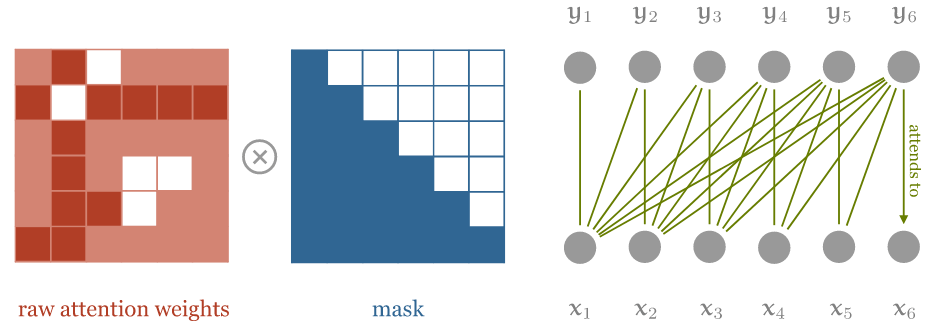
对 self-attention 进行 masking 操作，确保 input sequence 中只有当前位置之前的 input elements 能参与计算。 注意图中的乘法符号其实有一点点误导性：我们实际上是将右上角的元素设置为负无穷大 −∞
由于我们希望这些元素在 softmax 之后全是 0，因此将它们设置为 −∞。相应的代码：
dot = torch.bmm(queries, keys.transpose(1, 2))
indices = torch.triu_indices(t, t, offset=1)
dot[:, indices[0], indices[1]] = float('-inf')
dot = F.softmax(dot, dim=2)
这样修改 self-attention 模块之后，模型就不能再 look forward input sequence 了。
6.4.2 训练：基于维基百科数据集
enwik8
我们在标准 **
enwik8
** 数据集（取自 Hutter prize） 上进行训练，该数据集包含 108 个维基百科文本中的字符。在训练期间，通过从数据中随机抽取子序列来生成批次。
我们使用由 12 个 transformer block 和 256 个嵌入维度组成的 transformer，对长度为 256 的序列进行训练。 在 **
RTX 2080Ti
**（大约 170K 个大小为 32 的批次）上训练了大约 24 小时后， 让模型从 256 个字符的种子开始生成：对于每个字符，输入它前面的 256 个字符， 然后预测下一个字符。 我们从temperature 为 0.5 的那个开始采样，然后移动到下一个字符。
输出如下所示：
1228X Human & Rousseau. Because many of his stories were originally published in long-forgotten magazines and journals, there are a number of [[anthology|anthologies]] by different collators each containing a different selection. His original books have been considered an anthologie in the [[Middle Ages]], and were likely to be one of the most common in the [[Indian Ocean]] in the [[1st century]]. As a result of his death, the Bible was recognised as a counter-attack by the [[Gospel of Matthew]] (1177-1133), and the [[Saxony|Saxons]] of the [[Isle of Matthew]] (1100-1138), the third was a topic of the [[Saxony|Saxon]] throne, and the [[Roman Empire|Roman]] troops of [[Antiochia]] (1145-1148). The [[Roman Empire|Romans]] resigned in [[1148]] and [[1148]] began to collapse. The [[Saxony|Saxons]] of the [[Battle of Valasander]] reported the y
6.4.3 文本生成结果分析
对于上面的输出，应该注意到，
- 输出的文本中正确使用了维基百科链接标签语法，链接内的文本准确表达了链接主题。
- 生成的内容也与主题大致一致：生成的文本以圣经和罗马帝国为主题，在不同的地方使用不同的相关术语。
- 还有一个不那么明显的地方：“Battle of Valasander”，这场“战争”似乎是这个神经网络自己杜撰的。
这虽然与 GPT-2 等模型的性能相去甚远，但与 RNN 等模型相比优势已经很明显：更快的训练速度（类似的 RNN 模型需要很多天来训练）和更好的长期一致性。
另外，该模型在验证集上实现了 **
1.343bit/byte
** 的压缩， 这与 GPT-2 模型（下文会展开介绍）实现的每字节 0.93 位的相差不远。
6.5 设计考虑：Transformer 与 RNN/卷积 对比
在 transformer 之前，最先进的架构是 RNN（通常是 LSTM 或 GRU），但它们存在一些问题。
RNN 展开（unrolled）后长这样：
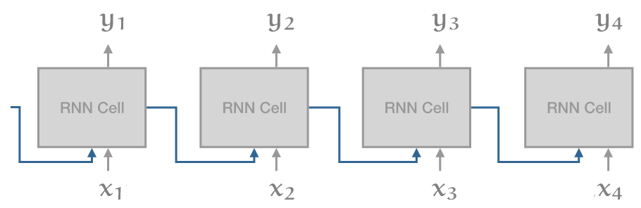
RNN 最大的问题是**
级联
**（recurrent connection）： 虽然它使得信息能沿着 input sequence 一路传导， 但也意味着在计算出 i−1 单元之前，无法计算出 i 单元的输出。
与 RNN 此对比，一维卷积（1D convolution）如下：
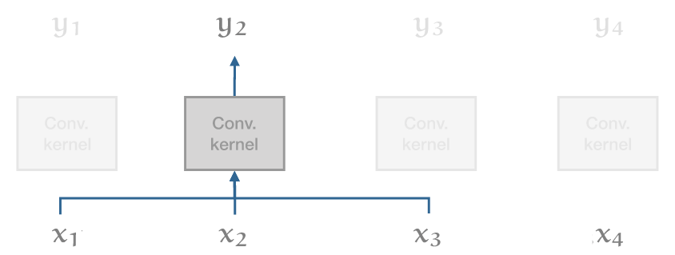
在这个模型中，所有输出向量都可以并行计算，因此速度非常快。但缺点是它们 在 long range dependencies 建模方面非常弱。在一个卷积层中，只有距离比 kernel size 小的单词之间才能彼此交互。对于更长的依赖，就需要堆叠许多卷积。
Transformer 试图兼顾二者的优点：
- 可以像对彼此相邻的单词一样，轻松地对输入序列的整个范围内的依赖关系进行建模（事实上，如果没有位置向量，二者就没有区别）；
- 同时，避免 recurrent connections，因此整个模型可以用非常高效的 feed forward 方式计算。
Transformer 的其余设计主要基于一个考虑因素 —— 深度 —— 大多数选择都是训练大量 transformer block 层，例如，transformer 中只有两个非线性的地方：
- self-attention 中的 softmax；
- 前馈层中的 ReLU。
模型的其余部分完全由线性变换组成，完美地保留了梯度。
I suppose the layer normalization is also nonlinear, but that is one nonlinearity that actually helps to keep the gradient stable as it propagates back down the network.
7 历史包袱
如果在网上看一些介绍 transformer 的文章，可能会经注意它们提到的一些概念和术语本文并没有介绍。 这是因为我认为那些东西并不是理解现代 transformer 所必需的。 话虽如此，有两个方面还是可以介绍一下，因为它们对于理解网上的那些关于现代 transformer 的文章还是有帮助的。
7.1 为什么叫 self-attention？
重点在 attention 这个单词上。
在 self-attention 提出之前，sequence models 主要指的是由 recurrent networks 或 convolutions 堆叠（stack）而成的网络。 之后人们发现，如果不是将上一层的输出直接 feed 到下一层的输入， 而是引入一种中间机制来判断输入中的哪些元素与输出中的某个特定单词相关， 就能给 sequence models 带来很大改善。具体来说，
- 我们把 input 称为 values（因为它们是实实在在的值，我们将基于这些值计算输出）；
- 然后，一些（trainable）机制为每个 value 分配一个 key；
- 最后，对每个 output，一些其他机制分配一个 query。
这些名称源自键值存储（key-value store）数据结构。 在 key-value store 场景中，对于每个 query（查询），store 中（最多）只有一个 item 能匹配到， 这个 item 有唯一的 key，返回这个 key 对应的 value。
Attention（注意力）模型是 key-value store 模型的宽松版：
- store 中的每个 key 都能在某种程度上（而不是精确 100% 或 0%）匹配到 query；
- 另外，query 返回的也不是单个 value，而是所有 value，我们根据每个 key 与 query 匹配的程度对相应 value 取一个加权和。
self-attention 的重大突破在于，attention 本身就是一种足够强大的机制，能完成所有学习。 正如作者所说，Attention is all you need。
- Key/value/query 都来自同一个 input vector（只是各自经过了略微不同的线性变换）；
- 他们关注自己（attend to themselves），因此叫 self-attention；
- 这种 self-attention 经过多层堆叠之后，就能提供足够的非线性和表征能力（nonlinearity and representational power）来学习非常复杂的功能。
7.2 最初的 transformer: encoders and decoders
当时的 sequence-to-sequence model 的标准结构是带 teacher forcing 的 encoder-decoder 架构，
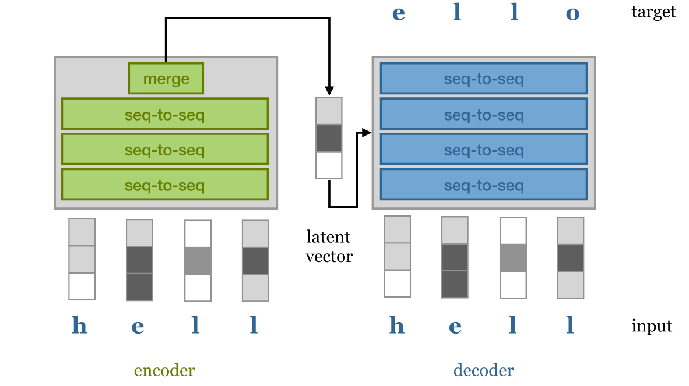
encoder-decoder 模型
Encoder 获取输入序列并将整个 sequence 映射为一个 latent representations， 这可以是一系列 latent vectors，也可以是如上图中的单个向量。 然后将该向量传递给 decoder，后者将其解码为期望的目标序列（例如，同一句话的另一种语言表示）。
Teacher forcing 指的是允许 decoder 访问 input 的技术 —— 但以自回归（autoregressive）的方式。 也就是说， decoder 基于 latent vectors 和它自己已经生成的单词，逐单词生成输出句子。 这减轻了 latent representations 的一些压力：
- decoder 可以使用逐词采样（word-by-word sampling）来处理语法（syntax and grammar）等低级结构，
- 而使用 latent vectors 来 capture 更高级别的语义结构（semantic structure）。
理想情况下，使用相同的 latent representations 进行两次 decoding 会得到两个具有相同含义的不同句子。
在后来的 transformer 中，如 BERT 和 GPT-2， encoder/decoder 被完全去掉了。 简单的 transformer block 做堆叠（stack）就足以在许多基于序列的任务中实现最先进的效果。 这种模型有时被称为 decoder-only transformer（对于自回归模型） 或 encoder-only transformer（对于没有 masking 的模型）。
8 现代 transformers
来看几个有代表性的现代 transformers。
8.1 Google
BERT
：
340M
参数
BERT (Bidirectional Encoder Representations from Transformers) 是首批证明 transformer 可以在各种基于语言的任务上 （question answering, sentiment classification or classifying whether two sentences naturally follow one another） 达到人类水平的模型之一。
BERT 由一些与本文描述的类似的简单 transformer block 堆叠而成，然后在一个大型通用领域语料库上进行预训练， 该语料库由包含 8 亿个（800M）单词的英文书籍（现代作品，from unpublished authors） 和包含 25 亿（**
2.5B
）个单词英文**维基百科文章（去掉了 markup）组成。
预训练由两个任务组成：
Masking
A certain number of words in the input sequence are: masked out, replaced with a random word or kept as is. The model is then asked to predict, for these words, what the original words were. Note that the model doesn't need to predict the entire denoised sentence, just the modified words. Since the model doesn't know which words it will be asked about, it learns a representation for every word in the sequence.
Next sequence classification
Two sequences of about 256 words are sampled that either (a) follow each other directly in the corpus, or (b) are both taken from random places. The model must then predict whether a or b is the case.
BERT uses WordPiece tokenization, which is somewhere in between word-level and character level sequences. It breaks words like walking up into the tokens walk and ##ing. This allows the model to make some inferences based on word structure: two verbs ending in -ing have similar grammatical functions, and two verbs starting with walk- have similar semantic function.
The input is prepended with a special
<cls>
token. The output vector corresponding to this token is used as a sentence representation in sequence classification tasks like the next sentence classification (as opposed to the global average pooling over all vectors that we used in our classification model above).
After pretraining, a single task-specific layer is placed after the body of transformer blocks, which maps the general purpose representation to a task specific output. For classification tasks, this simply maps the first output token to softmax probabilities over the classes. For more complex tasks, a final sequence-to-sequence layer is designed specifically for the task.
The whole model is then re-trained to finetune the model for the specific task at hand.
作者展示了与之前的模型相比，最大的改进来自 BERT 的双向特性（bidirectional nature）。 之前的模型，例如 GPT，使用的是 autoregressive mask，只允许 attention 使用前面的 token。 在 BERT 中，all attention is over the whole sequence，这是性能提升的主要来源。
这也是为什么 “BERT” 中的 B 表示 “bidirectional”。
最大的 BERT model 使用了 24 transformer blocks，embedding dimension 1024，16 attention heads， 总参数数量为 3.4 亿（340M）。
8.2 OpenAI
GPT-2
：
1.5B
参数
They show state-of-the art performance on many tasks. On the wikipedia compression task that we tried above, they achieve 0.93 bits per byte.
GPT-2 是第一个真正进入主流新闻的 transformer 模型，原因是 GPT-2 可以生成看起来足够可信的文本，如果 2016 年有这种技术， 那当年美国总统大选中出现的那种大规模假新闻活动只需要一个人就能完成了。
对于 GPT-2，OpenAI 也做出了一个颇受争议的决定 —— 不公布完整模型。
GPT-2 第一个技巧是构建一个新的高质量数据集，
- 虽然 BERT 使用了高质量的数据，但数据的来源（精心编写的书籍和维基百科文章）在写作风格上缺乏多样性；
- 为了在不牺牲质量的前提下收集更多不同的数据，作者使用社交媒体网站 Reddit 上的链接来收集大量文本。
GPT2 本质上是一个语言生成模型（language generation model）， 因此像我们自己设计的 text generation transformer 一样，它也使用了 masked self-attention。 它使用字节对编码（byte-pair encoding）来 tokenize the language， 这与 WordPiece encoding 一样将单词拆分为比“比单词短、比单个字母长”的 tokens。
GPT2 与我们的 text generation transformer 非常相似，只有很小的层级顺序差异，以及增加了训练深度。 最大的模型使用 48 个 transformer block，序列长度为 1024，嵌入维度为 1600，总共 1.5B 参数。
GPT2 在很多任务上都表现出了最先进的性能。在上面提到的维基百科压缩任务中，它取得了每字节 0.93 位的压缩效率。
8.3 Transformer-XL
While the transformer represents a massive leap forward in modeling long-range dependency, the models we have seen so far are still fundamentally limited by the size of the input. Since the size of the dot-product matrix grows quadratically in the sequence length, this quickly becomes the bottleneck as we try to extend the length of the input sequence. Transformer-XL is one of the first succesful transformer models to tackle this problem.
During training, a long sequence of text (longer than the model could deal with) is broken up into shorter segments. Each segment is processed in sequence, with self-attention computed over the tokens in the curent segment and the previous segment. Gradients are only computed over the current segment, but information still propagates as the segment window moves through the text. In theory at layer n, information may be used from n segments ago.
A similar trick in RNN training is called truncated backpropagation through time. We feed the model a very long sequence, but backpropagate only over part of it. The first part of the sequence, for which no gradients are computed, still influences the values of the hidden states in the part for which they are.
To make this work, the authors had to let go of the standard position encoding/embedding scheme. Since the position encoding is absolute, it would change for each segment and not lead to a consistent embedding over the whole sequence. Instead they use a relative encoding. For each output vector, a different sequence of position vectors is used that denotes not the absolute position, but the distance to the current output.
This requires moving the position encoding into the attention mechanism (which is detailed in the paper). One benefit is that the resulting transformer will likely generalize much better to sequences of unseen length.
8.4 Sparse transformers
Sparse transformers tackle the problem of quadratic memory use head-on. Instead of computing a dense matrix of attention weights (which grows quadratically), they compute the self-attention only for particular pairs of input tokens, resulting in a sparse attention matrix, with only nn−−√ explicit elements.
This allows models with very large context sizes, for instance for generative modeling over images, with large dependencies between pixels. The tradeoff is that the sparsity structure is not learned, so by the choice of sparse matrix, we are disabling some interactions between input tokens that might otherwise have been useful. However, two units that are not directly related may still interact in higher layers of the transformer (similar to the way a convolutional net builds up a larger receptive field with more convolutional layers).
Beyond the simple benefit of training transformers with very large sequence lengths, the sparse transformer also allows a very elegant way of designing an inductive bias. We take our input as a collection of units (words, characters, pixels in an image, nodes in a graph) and we specify, through the sparsity of the attention matrix, which units we believe to be related. The rest is just a matter of building the transformer up as deep as it will go and seeing if it trains.
9 大型模型优化
训练 transformer 的一大瓶颈是 self attention 中的点积矩阵，
- 对于序列长度 t，这是一个包含 t2 个元素的稠密矩阵。
- 在标准的 32 位精度下，当 t=1000 时，16 矩阵作为一个 batch，这个 batch 占用大约 250Mb 的显存。
- 由于我们每个 self-attention 操作至少需要四个层（在 softmax 之前和之后，加上它们的梯度），这限制了在标准 12Gb GPU 中最多只能使用 12 层。
实际上我们能用到的层数更少，因为输入和输出也占用了大量显存（尽管点积占主导地位）。
网上有些模型包含超过 12000 的序列长度，有 48 层， 使用密实的点积矩阵。这些模型是在集群上训练的，但是单个前向/后向 propagation 仍然只能由单个 GPU 来完成。
如何将如此巨大的 transformer 放入 12Gb 内存中？主要有三个技巧。
9.1 半精度（half precision）
在现代 GPU 和 TPU 上，tensor 计算可以在 16 位浮点上高效完成。 但并不是将 tensor 的 dtype 设置为
torch.float16
那么简单。对于某些部分，如 loss，仍然需要 32 位精度。 但其中大部分可以通过现有库相对轻松地搞定。
半精度优化能使内存占用减半，或者说能使有效内存翻倍。
9.2 梯度积累（gradient accumulation）
对于大型模型，我们可能只能对单个实例执行前向/后向传递（forward/backward pass）。
batch size = 1
不太可能产生稳定的学习。
幸运的是，我们可以对更大 batch size 中的每个实例执行单个前向/后向，并对我们找到的梯度简单地求和 （这是多元链式法则multivariate chain rule的结果）。 当我们到达 batch 的末尾时，执行单步梯度下降，并将梯度归零（zero out）。 在 Pytorch 中这非常容易，**
optimizer.zero_grad()
** 就行了。
9.3 梯度 checkpoint（gradient checkpointing）
如果模型太大以至于即使是单个 forward/backward 也无法放入内存，那就只能牺牲更多的计算来提高内存效率。
在 gradient checkpointing 中，将模型分成几个部分（sections）。对每个部分执行单独的 forward/backward 梯度计算，而无需为其余部分保留中间值。 Pytorch 相关的函数直接可用。 更多信息可参考 这篇博客。
10 结束语
Transformer 很可能是未来几十年占主导地位的最简单机器学习架构。作为从业者，有充分的理由关注它们。
首先，目前的性能瓶颈纯粹在硬件上。与卷积或 LSTM 不同， transformer 目前的限制完全取决于我们能把多大的模型放到 GPU 内存中， 以及我们可以在合理的时间内输入多少数据进去。 我毫不怀疑我们最终会达到这样的地步： 更多层和更多数据不再有帮助，但目前似乎还没有达到这个地步。
其次，transformer 极其通用。 到目前为止，transformer 主要在语言建模方面取得了巨大成功， 在图像和音乐分析方面也取得了一定的成功，但 transformer 具有一定程度的通用性，其他领域的应用还有待开发。
- 基本 transformer 是一个 set-to-set 模型。 只要数据是基本单位组成的集合（a set of units），就可以应用 transformer；
- 数据的其他信息（如局部结构），可以通过位置嵌入或通过 manipulate 注意力矩阵的结构（使其稀疏或屏蔽部分）来添加， 这在多模态学习（multi-modal learning）中特别有用。例如，可以轻松地将带字幕的图像 分解为像素集合和字符集合，然后设计一些精巧的嵌入和稀疏结构来帮助模型组合和对齐二者。 如果我们将关于某一领域的全部知识组合成一个关系型结构（relational structure）， 如多模态知识图谱（multi-modal knowledge graph，[3]），那就可以使用简单的 transformer block 在多模态单元之间传播信息， 然后通过稀疏结构控制与哪些单元直接交互。
到目前为止，transformer 还主要被视为一种语言模型。希望随着时间推移， 我们会看到它在其他领域得到更多采用，不仅是提高这些领域的效率，还包括简化这些领域的现有模型， 让从业者能更直观地控制他们模型的归纳偏差。
参考资料
- The illustrated transformer, Jay Allamar.
- The annotated transformer, Alexander Rush.
- The knowledge graph as the default data model for learning on heterogeneous knowledge Xander Wilcke, Peter Bloem, Victor de Boer
- Matrix factorization techniques for recommender systems Yehuda Koren et al.